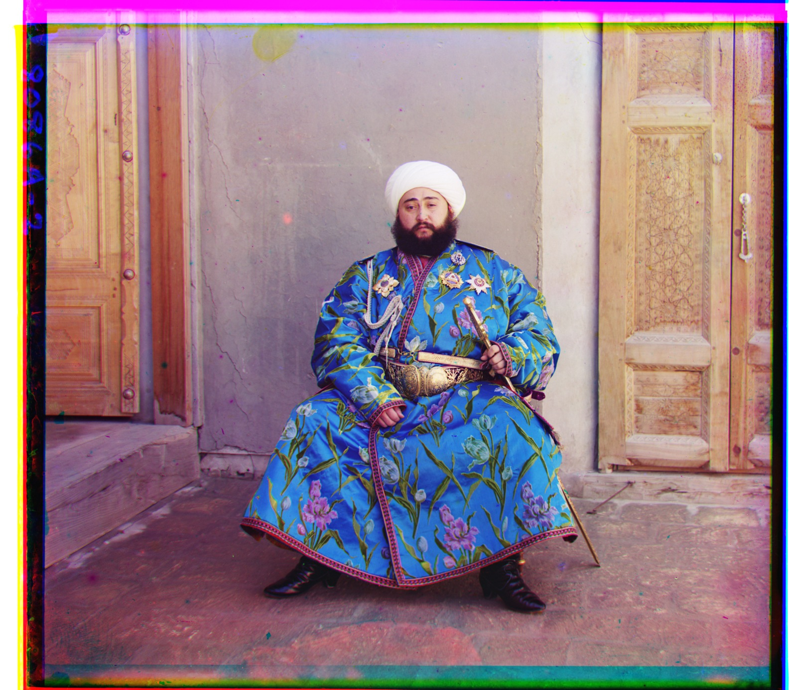

CS 180 · UC Berkeley
A study
in seeing.
Hi, I’m Rohit. These are my experiments in computer vision and computational photography. A little light, a little color, and a lot of looking closer.
Explore the projectsAn interactive color study

Slide to align the layers. Inspired by the process in Project 1.
The project index
02 projects / 02 ways of seeing


About this collection
A record of learning to work with images, from the way a camera sees the world to the way code puts it back together.